소방설비산업기사(전기) (2018-04-28 기출문제)
1과목: 소방원론
1. 포 소화약제에 대한 설명으로 옳은 것은?
- 수성막포는 단백포 소화약제보다 유출유화재에 소화성능이 떨어진다.
- 수용성 유류화재에는 알콜형포 소화약제가 적합하다.
- 알콜형포 소화약제의 주성분은 제2철염이다.
- 불화단백포는 단백포에 비하여 유동성이 떨어진다.
(정답률: 63%)

2. 방폭구조 중 전기불꽃이 발생하는 부분을 기름 속에 잠기게 함으로써 기름면 위 또는 용기 외부에 존재하는 가연성 증기에 착화할 우려가 없도록 한 구조는?
- 내압 방폭구조
- 안전증 방폭구조
- 유입 방폭구조
- 본질안전 방폭구조
(정답률: 78%)
3. 안전을 위해서 물속에 저장하는 물질은?
- 나트륨
- 칼륨
- 이황화탄소
- 과산화나트륨
(정답률: 79%)
4. 자연발화의 발화원이 아닌 것은?
- 분해열
- 흡착열
- 발효열
- 기화열
(정답률: 71%)
5. 오존파괴지수(ODP)가 가장 큰 것은?
- Halon 104
- CFC 11
- Halon 1301
- CFC 113
(정답률: 84%)
6. 실내 화재 발생시 순간적으로 실 전체로 화염이 확산되면서 온도가 급격히 상승하는 현상은?
- 제트 화이어(jet fire)
- 화이어 볼(fire ball)
- 플래시 오버(flash over)
- 리프트(lift)
(정답률: 88%)
7. 칼륨이 물과 반응하면 위험한 이유는?
- 수소가 발생하기 때문에
- 산소가 발생하기 때문에
- 이산화탄소가 발생하기 때문에
- 아세틸렌이 발생하기 때문에
(정답률: 86%)
8. 공기 1kg 중에는 산소가 약 몇 mol 이 들어 있는가? (단, 산소, 질소 1mol의 분자량은 각각 32g, 28g 이고, 공기 중 산소의 농도는 23 wt% 이다.)
- 5.65
- 6.53
- 7.19
- 7.91
(정답률: 67%)
9. 자연발화에 대한 설명으로 틀린 것은?
- 외부로부터 열의 공급을 받지 않고 온도가 상승하는 현상이다.
- 물질의 온도가 발화점 이상이면 자연발화한다.
- 다공질이고 열전도가 작은 물질일수록 자연발화가 일어나기 어렵다.
- 건성유가 묻어있는 기름걸레가 적층되어 있으면 자연발화가 일어나기 쉽다.
(정답률: 72%)
10. 물의 증발잠열은 약 몇 kcal/kg인가?
- 439
- 539
- 639
- 739
(정답률: 86%)
11. 가연물의 종류에 따른 화재의 분류로 틀린 것은?
- 일반화재 : A급
- 유류화재 : B급
- 전기화재 : C급
- 주방화재 : D급
(정답률: 91%)
12. 화학적 점화원의 종류가 아닌 것은?
- 연소열
- 중합열
- 분해열
- 아크열
(정답률: 80%)
13. B급 화재에 해당하지 않는 것은?
- 목탄
- 등유
- 아세톤
- 이황화탄소
(정답률: 86%)
14. 일산화탄소에 관한 설명으로 틀린 것은?
- 일산화탄소의 증기비중은 약 0.97로 공기보다 약간 가볍다.
- 인체의 혈액 속에서 헤모글로빈(Hb)과 산소의 결합을 방해한다.
- 질식작용은 없다.
- 불완전연소 시 주로 발생한다.
(정답률: 81%)
15. 할로겐화합물 소화약제가 아닌 것은?
- CF3Br
- C2F4Br2
- CF2ClBr
- KHCO3
(정답률: 86%)
16. 분해폭발을 일으키지 않는 물질은?
- 아세틸렌
- 프로판
- 산화질소
- 산화에틸렌
(정답률: 57%)
17. 기름의 표면에 거품과 얇은 막을 형성하여 유류화재 진압에 뛰어난 소화효과를 갖는 포소화약제는?
- 수성막포
- 합성계면활성제포
- 단백포
- 알콜형포
(정답률: 80%)
18. 소화약제로서의 물의 단점을 개선하기 위하여 사용하는 첨가제가 아닌 것은?
- 부동액
- 침투제
- 증점제
- 방식제
(정답률: 66%)
19. 물이 소화약제로서 널리 사용되고 있는 이유에 대한 설명으로 틀린 것은?
- 다른 약제에 비해 쉽게 구할 수 있다.
- 비열이 크다.
- 증발잠열이 크다.
- 점도가 크다.
(정답률: 82%)
20. 정전기 발생 방지대책 중 틀린 것은?
- 상대습도를 높인다.
- 공기를 이온화시킨다.
- 접지시설을 한다.
- 가능한 한 부도체를 사용한다.
(정답률: 76%)
2과목: 소방전기회로
21. 전압계와 전류계를 사용하여 전압 및 전류를 측정하려는 경우의 연결방법으로 옳은 것은?
- 전압계 ： 직렬, 전류계 : 병렬
- 전압계 ： 직렬, 전류계 : 직렬
- 전압계 ： 병렬, 전류계 : 병렬
- 전압계 ： 병렬, 전류계 : 직렬
(정답률: 79%)
22. 서보전동기의 특징에 대한 설명 중 틀린 것은?
- 저속이며, 원활한 운전이 가능하다.
- 급가속 및 급감속이 용이한 것이어야 한다.
- 원칙적으로 정역전이 가능해야 한다.
- 직류용은 없고, 교류용만 있다.
(정답률: 82%)
23. 브리지 정류회로에서 다이오드 1개가 개방되었을 때 출력전압은?
- 출력전압은 0 이다.
- 입력전압의 1/4크기 이다.
- 입력전압의
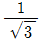
이다. - 반파 정류 전압이다.
(정답률: 66%)
24. 자동제어의 분류에서 제어량에 의한 분류가 아닌 것은?
- 정치제어
- 서보기구
- 프로세스제어
- 자동조정
(정답률: 49%)
25. 0.5H인 코일의 리액턴스가 753.6Ω 일 때 주파수는 약 몇 Hz 인가?
- 60
- 120
- 240
- 360
(정답률: 55%)
26. 매분 500rpm, 주파수 60Hz의 기전력을 유기하고 있는 교류발전기가 있다. 전기각속도는 몇 rad/s 인가?
- 314
- 337
- 357
- 377
(정답률: 60%)
27. 다음의 논리식 중 틀린 것은?
- X +
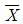
= 0 - X + 1 = 1
- X ㆍ
 + Y = X + Y
+ Y = X + Y - (X +
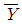
) ㆍ Y = X ㆍ Y
(정답률: 64%)
28. 다음 중 강자성체에 속하지 않는 것은?
- Fe
- Ni
- Cu
- Co
(정답률: 65%)
29. 5Ω의 저항회로에 220V, 60Hz 의 교류 정현파 전압을 인가할 때 이 회로의 흐르는 전류의 순시값은 몇 A 인가?
- 440
 sin377t
sin377t - 220
 sin377t
sin377t - 44
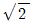
sin377t - 110
 sin377t
sin377t
(정답률: 64%)
30. 전원에 저항이 각각 R(Ω)인 저항을 △결선으로 접속시킬 때와 Y결선으로 접속시킬 때, 선전류의 비는?
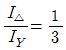
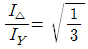
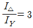
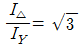
(정답률: 49%)
31. 내부저항이 117Ω인 직류 전류계의 최대 측정범위는 150mA이다. 분류기를 접속하여 전류계를 6A까지 확대하여 사용하고자 하는 경우 분류기의 저항은 몇 Ω 인가?
- 2.9
- 3.0
- 5.8
- 6.0
(정답률: 52%)
32. 선간전압이 220V인 3상 전원에 임피던스가 Z = 8 + j6Ω 인 3상 Y부하를 연결할 경우 상전류는 몇 A 인가?
- 7.3
- 12.7
- 18.4
- 22.0
(정답률: 61%)
33. 어느 회로의 유효전력은 80W 이고, 무효전력은 60Var 이다. 이 때의 역률 cosθ의 값은?
- 0.8
- 0.85
- 0.9
- 0.95
(정답률: 54%)
34. 다음 진리표의 논리게이트는? (단, A와 B는 입력이고 X는 출력이다.)
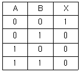
- AND
- OR
- NOT
- NOR
(정답률: 65%)
35. 60mH의 코일에 전류가 10초간 5A 변화되었다면 유도되는 기전력은 몇 mV인가?
- 30
- 50
- 300
- 500
(정답률: 51%)
36. 다음 반도체 소자 중 부성저항 특성을 갖지 않는 것은?
- 정류다이오드
- 트라이악(TRIAC)
- UJT
- 사이리스터
(정답률: 53%)
37. 정현파 교류가 공급되는 RLC 직렬회로에서 용량성 회로가 되는 경우는?
- R=50Ω, XL=10Ω, XC=40Ω
- R=40Ω, XL=30Ω, XC=20Ω
- R=30Ω, XL=30Ω, XC=20Ω
- R=20Ω, XL=40Ω, XC=10Ω
(정답률: 70%)
38. R-L-C 병렬회로가 병렬 공진 되었을 때 합성 전류는?
- 전류는 무한대가 됨
- 전류는 흐르지 않음
- 최대가 됨
- 최소가 됨
(정답률: 52%)
39. 전압 v=5sin5t+10sin10t (V)이고, 전류 i=10sin5t+5sin10t (A)일 때 소비전력은 몇 W 인가?
- 125
- 50
- 12.9
- 78.2
(정답률: 49%)
40. 전압계의 측정 범위를 10배로 하면 내부저항은 배율기 저항의 몇 배가 되는가?
- 1/10
- 1/9
- 9
- 10
(정답률: 70%)
3과목: 소방관계법규
41. 소방기본법령상 특수가연물의 저장 기준 중 다음 ( )안에 알맞은 것은? (단, 석탄 ㆍ 목탄류를 발전용으로 저장하는 경우는 제외한다.)
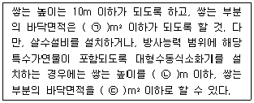
- ㉠ 20, ㉡ 50, ㉢ 100
- ㉠ 15, ㉡ 50, ㉢ 200
- ㉠ 50, ㉡ 20, ㉢ 100
- ㉠ 50, ㉡ 15, ㉢ 200
(정답률: 65%)
42. 화재예방, 소방시설 설치 ㆍ 유지 및 안전관리에 관한 법령상 특정소방대상물의 관계인이 특정소방대상물의 규모 ㆍ 용도 및 수용인원 등을 고려하여 갖추어야 하는 소방시설의 종류 기준 중 다음 ( )안에 알맞은 것은?
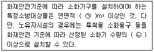
- ㉠ 33, ㉡ 1/2
- ㉠ 33, ㉡ 1/5
- ㉠ 50, ㉡ 1/2
- ㉠ 50, ㉡ 1/5
(정답률: 70%)
43. 소방기본법령상 소방본부장 또는 소방서장은 화재경계지구 안의 관계인에 대하여 소방상 필요한 훈련 및 교육을 실시하고자 하는 때에는 관계인에게 훈련 또는 교육 며칠전까지 그 사실을 통보하여야 하는가?
- 5
- 7
- 10
- 14
(정답률: 56%)
44. 소방기본법령상 소방용수시설 및 지리조사의 기준 중 다음 ( ) 안에 알맞은 것은?
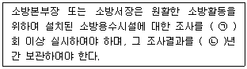
- ㉠ 월 1, ㉡ 1
- ㉠ 월 1, ㉡ 2
- ㉠ 년 1, ㉡ 1
- ㉠ 년 1, ㉡ 2
(정답률: 74%)
45. 소방기본법령상 인접하고 있는 시ㆍ도간 소방업무의 상호응원협정을 체결하고자 하는 때에 포함되도록 하여야 하는 사항이 아닌 것은?
- 소방교육ㆍ훈련의 종류 및 대상자에 관한 사항
- 화재의 경계ㆍ진압활동에 관한 사항
- 출동대원의 수당ㆍ식가 및 피복의 수선 소요경비의 부담에 관한 사항
- 화재조사활동에 관한 사항
(정답률: 55%)
46. 위험물안전관리법령상 제조소 또는 일반 취급소의 위험물취급탱크 노즐 또는 맨홀을 신설 시 노즐 또는 맨홀의 직경이 몇 mm를 초과하는 경우에 변경허가를 받아야 하는가?
- 250
- 300
- 450
- 600
(정답률: 58%)
47. 화재예방, 소방시설 설치ㆍ유지 및 안전관리에 관한 법령상 소방시설등의 자체점검 시 점검인력 배치기준 중 점검인력 1단위가 하루동안 점검할 수 있는 특정소방대상물의 종합정밀점검 연면적 기준으로 옳은 것은? (단, 보조인력을 추가하는 경우를 제외힌다.)
- 3500m2
- 7000m2
- 10000m2
- 12000m2
(정답률: 68%)
48. 화재예방 소방시설 설치, 유지 및 안전관리에 관한 법령상 단독경보형 감지기를 설치하여야 하는 특정소방대상물의 기준 중 틀린 것은?
- 연면적 600m2 미만의 기숙사
- 연면적 600m2 미만의 숙박시설
- 연면적 1000m2 미만의 아파트등
- 교육연구시설 또는 수련시설 내에 있는 합숙소 또는 기숙사로서 연면적 2000m2 미만인 것
(정답률: 55%)
49. 화재예방, 소방시설 설치ㆍ유지 및 안전관리에 관한 법령상 방염성능기준 이상의 실내장식물 등을 설치하여야 하는 특정소방대상물의 기준으로 틀린 것은?
- 층수가 11층 이상인 아파트
- 건축물의 옥내에 있는 시설로서 종교시설
- 의료시설 중 종합병원
- 노유지시설
(정답률: 74%)
50. 화재예방, 소방시설 설치ㆍ유지 및 안전관리에 관한 법령상 수용인원 산정 방법 중 다음의 청소년시설의 수용인원은 몇 명인가?
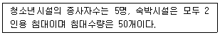
- 55
- 75
- 85
- 1⑤
(정답률: 78%)
51. 위험물안전관리법령상 인화성액체위험물(이황화탄소를 제외)의 옥외탱크저장소의 탱크 주위에 설치하여야 하는 방유제의 기준 중 틀린 것은?
- 방유제의 용량은 방유제안에 설치된 탱크가 하나인 때에는 그 탱크 용량의 110% 이상으로 할 것
- 방유제의 용량은 방유제안에 설치된 탱크가 2기 이상인 때에는 그 탱크 중 용량이 최대인 것의 용량의 110% 이상으로 할 것
- 방유제의 높이는 1m 이상 3m 이하, 두께 0.2m 이상, 지하매설깊이 0.5m 이상으로 할 것
- 방유제내의 면적은 80000m2이하로 할 것
(정답률: 68%)
52. 소방기본법상 화재경계지구 안의 소방대상물에 대한 소방특별조사를 거부ㆍ방해 또는 기피한 자에 대한 벌칙 기준으로 옳은 것은?
- 400만원 이하의 벌금
- 300만원 이하의 벌금
- 200만원 이하의 벌금
- 100만원 이하의 벌금
(정답률: 43%)
53. 소방기본법상 명령권자가 소방본부장, 소방서장, 소방대장에게 있는 사항은?
- 소방활동을 할 때에 긴급한 경우에는 이웃한 소방본부장 또는 소방서장에게 소방업무의 응원 요청할 수 있다.
- 화재, 재난ㆍ재해, 그밖의 위급한 상황이 발생한 현장에서 소방활동을 위하여 필요할 때에는 그 관할구역에 사는 사람 또는 그 현장에 있는 사람으로 하여금 사람을 구출하는 일 또는 불을 끄거나 불이 번지지 아니하도록 하는 일을 하게 할 수 있다.
- 수사기관이 방화 또는 실화의 혐의가 있어서 이미 피의자를 체포하였거나 증거물을 압수하였을 때에 화재조사를 위하여 필요한 경우에는 수사에 지장을 주지 아니하는 범위에서 그 피의자 또는 압수된 증거물에 대한 조사를 할 수 있다.
- 화재, 재난ㆍ재해, 그 밖의 위급한 상황이 발생하였을 때에는 소방대를 현장에 신속하게 출동시켜 화재진압과 인명구조ㆍ구급 등 소방에 필요한 활동을 하게 하여야 한다.
(정답률: 59%)
54. 화재예방, 소방시설 설치ㆍ유지 및 안전관리에 관한 법령상 근무자 및 거주자에게 소방훈련ㆍ교육을 실시하여야 하는 특정소방대상물의 기준 중 다음 ( ) 안에 알맞은 것은?
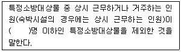
- 3
- 5
- 7
- 10
(정답률: 71%)
55. 화재예방, 소방시설 설치ㆍ유지 및 안전관리에 관한 법령상 둘 이상의 특정소방대상물이 내화구조로 된 연결통로가 벽이 없는 구조로서 그 길이가 몇 m 이하인 경우 하나의 소방대상물로 보는가?
- 6
- 9
- 10
- 12
(정답률: 49%)
56. 위험물안전관리법령상 제조소등이 아닌 장소에서 지정수량 이상의 위험물을 취급할 수 있는 기준 중 다음 ( ) 안에 알맞은 것은?
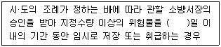
- 15
- 30
- 60
- 90
(정답률: 67%)
57. 소방시설공사업법령상 감리원의 세부 배치 기준 중 일반 공사감리 대상인 경우 다음 ( ) 안에 알맞은 것은? (단, 일반 공사감리 대상인 아파트의 경우는 제외한다.)
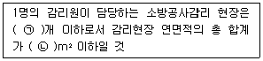
- ㉠ 5, ㉡ 50000
- ㉠ 5, ㉡ 100000
- ㉠ 7, ㉡ 50000
- ㉠ 7, ㉡ 100000
(정답률: 58%)
58. 소방시설공사업법상 제3자에게 소방시설공사시공을 하도급한 자에 대한 벌칙 기준으로 옳은 것은? (단, 대통령령으로 정하는 경우는 제외한다.)
- 100만원 이하의 벌금
- 300만원 이하의 벌금
- 1년 이하의 징역 또는 1000만원 이하의 벌금
- 3년 이하의 징역 또는 1500만원 이하의 벌금
(정답률: 66%)
59. 위험물안전관리법상 허가를 받지 아니하고 당해 제조소등을 설치하거나 그 위치·구조 또는 설비를 변경할 수 있으며, 신고를 하지 아니하고 위험물의 품명·수량 또는 지정수량의 배수를 변경할 수 있는 기준으로 틀린 것은?
- 주택의 난방시설을 위한 저장소 또는 취급소
- 공통주택의 중앙난방시설을 위한 저장소 또는 취급소
- 수산용으로 필요한 건조시설을 위한 지정수량 20배 이하의 저장소
- 농예용으로 필요한 난방시설을 위한 지정수량 20배 이하의 저장소
(정답률: 58%)
60. 소방특별조사 결과 소방대상물의 위치·구조·설비 또는 관리의 상황이 화재나 재난·재해 예방을 위하여 보완될 필요가 있거나 화재가 발생하면 인명 또는 재산의 피해가 클 것으로 예상되는 때 관계인에게 그 소방대상물의 개수·이전·제거, 사용의 금지 또는 제한, 사용패쇄, 공사의 정지 또는 중지, 그 밖의 필요할 조치를 명할 수 있는 자가 아닌 것은?
- 소방서장
- 소방본부장
- 소방청장
- 시·도지사
(정답률: 71%)
4과목: 소방전기시설의 구조 및 원리
61. 누전경보기에 표시등을 사용하는 경우의 구조 및 기능 기준으로 옳은 것은?
- 전구는 사용전압의 110%인 교류전압을 20시간 연속하여 가하는 경우 단선, 현저한 광속변화, 흑화, 전류의 저하 등이 발생하지 아니하여야 한다.
- 전구는 2개 이상을 직렬로 접속하여야 한다. 다만, 방전등 또는 발광다이오드의 경우에는 그러하지 아니한다.
- 전구에는 적당한 보호카바를 설치하여야 한다. 다만, 발광다이오드의 경우에는 그러하지 아니한다.
- 주위의 밝기가 300lx인 장소에서 측정하여 앞면으로부터 1.5m 떨어진 곳에서 켜진 등이 확실히 식별되어야 한다.
(정답률: 54%)
62. 비상방송설비를 설치하여야 하는 특정소방대상물의 기준 중 옳은 것은? (단, 위험물 저장 및 처리 시설 중 가스시설, 사람이 거주하지 않는 동물 및 식물 관련 시설, 지하가 중 터널, 축사 및 지하구는 제외한다.)
- 지하층을 제외한 층수가 7층 이상인 것
- 지하층의 층수가 3층 이상인 것
- 연면적 3000m2 이상인 것
- 50명 이상의 근로자가 작업하는 옥내 작업장
(정답률: 53%)
63. 자동화재탐지설비의 경계구역 설정 기준 중 다음 ( )안에 알맞은 것은?
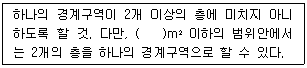
- 500
- 600
- 700
- 1000
(정답률: 57%)
64. 계단통로유도등의 조도시험 기준 중 다음 ( )안에 알맞은 것은?
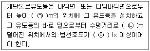
- ㉠ 2.5, ㉡ 10, ㉢ 0.5
- ㉠ 2.5, ㉡ 5, ㉢ 0.5
- ㉠ 2.0, ㉡ 10, ㉢ 1
- ㉠ 2.0, ㉡ 5, ㉢ 1
(정답률: 40%)
65. 자동화재탐지설비 수신기의 설치기준 중 다음 ( )안에 알맞은 것은?
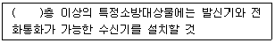
- 5
- 4
- 3
- 2
(정답률: 70%)
66. 무선통신보조설비를 설치하여야 하는 특정소방대상물의 기준 중 옳은 것은? (단, 위험물 저장 및 처리 시설 중 가스시설은 제외한다.)
- 지하가 중 터널로서 길이가 1000m 이상인 것
- 지하가(터널은 제외)로서 연면적 500m2 이상인 것
- 층수가 30층 이상인 것으로서 16층 이상 부분의 모든 층
- 지하층의 바닥면적의 합계가 1000m2 이상인 것 또는 지하층의 층수가 3층 이상이고 지하층의 바닥면적의 합계가 3000m2 이상인 것은 지하층의 모든 층
(정답률: 47%)
67. 유도등의 일반구조에 대한 기준 중 틀린 것은?
- 전선의 굵기는 인출선인 경우에는 단면적이 0.5mm2 이상, 인출선외의 경우에는 면적이 0.75mm2 이상이어야 한다.
- 상용전원전압의 110% 범위 안에서는 유도등 내부의 온도상승이 그 기능에 지장을 주거나 위해를 발생시킬 염려가 없어야 한다.
- 인출선의 길이는 전선인출 부분으로부터 150mm 이상이어야 한다. 다만, 인출선으로 하지 아니할 경우에는 풀어지지 아니하는 방법으로 전선을 쉽고 확실하게 부착할 수 있도록 접속단자를 설치하여야 한다.
- 사용전압은 300V 이하이어야 한다. 다만, 충전부가 노출되지 아니한 것은 300V를 초과할 수 있다.
(정답률: 49%)
68. 비상방송설비 음향장치의 설치기준 중 다음 ( )안에 알맞은 것은?
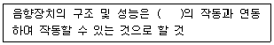
- 제연설비
- 단독경보형감지기
- 자동화재탐지설비
- 자동화재속보설비
(정답률: 67%)
69. 열전대식 차동식분포형 감지기의 설치기준 중 다음 ( )안에 알맞은 것은? (주요구조부가 내화구조로 된 특정소방대상물이 아닌 경우이다.)
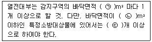
- ㉠ 18, ㉡ 72, ㉢ 4
- ㉠ 22, ㉡ 88, ㉢ 4
- ㉠ 18, ㉡ 72, ㉢ 20
- ㉠ 22, ㉡ 88, ㉢ 20
(정답률: 57%)
70. 유도표지의 설치기준 중 다음 ( )안에 알맞은 것은?
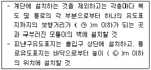
- ㉠ 15, ㉡ 1.0
- ㉠ 15, ㉡ 1.5
- ㉠ 20, ㉡ 1.0
- ㉠ 20, ㉡ 1.5
(정답률: 34%)
71. 일시적으로 발생한 열·연기 또는 먼지 등으로 인하여 화재신호를 발신할 우려가 있는 장소의 설치장소별 감지기 적응성 기준 중 회의실, 노래연습실 등 장소에 적응성을 갖는 감지기가 아닌 것은? (단, 연기감지기를 설치할 수 있는 장소이며, 흡연에 의해 연기가 체류하며 환기가 되지 않는 환경상태이다.)
- 차동식스포트형 감지기
- 차동식분포형 감지기
- 광전식분리형 감지기
- 이온화식스포트형 감지기
(정답률: 48%)
72. 자동화재속보설비 속보기 기능에 대한 기준 중 옳은 것은?
- 작동신호를 수신하거나 수동으로 동작시키는 경우 10초 이내에 소방관서에 자동적으로 신호를 발하여 통보하되, 3회 이상 속보할 수 있어야 한다.
- 예비전원을 직렬로 접속하는 경우에는 역충전 방지 등의 조치를 하여야 한다.
- 속보기는 연동 또는 수동 작동에 의한 다이얼링 후 소방관서와 전화접속이 이루어지지 않는 경우에는 최초 다이얼링을 포함하여 10회 이상 반복적으로 접속을 위한 다이얼링이 이루어져야 한다. 이 경우 매회 다이얼링 완료 후 호출은 60초 이상 지속되어야 한다.
- 속보기의 송수화장치가 정상위치가 아닌 경우에도 연동 또는 수동으로 속보가 가능하여야 한다.
(정답률: 40%)
73. 무선통신보조설비 분배기·분파기 및 혼합기 등의 임피던스는 몇 Ω 의 것으로 설치하여야 하는가?
- 25
- 50
- 70
- 100
(정답률: 73%)
74. 소방대상물 중 그 옥상의 직하층 또는 최상층(관람집회 및 운동시설 또는 판매시설을 제외)에 피난기구를 설치하지 아니할 수 있는 기준 중 다음 ( )안에 알맞은 것은? (단, 휴양콘도미니엄을 제외한 숙박시설에 설치되는 완강기 및 간이완강기의 경우는 제외한다.)
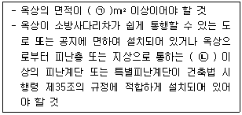
- ㉠ 1500, ㉡ 2
- ㉠ 1500, ㉡ 3
- ㉠ 1000, ㉡ 2
- ㉠ 1000, ㉡ 3
(정답률: 53%)
75. 휴대용 비상조명등의 설치기준 중 틀린 것은?
- 지하상가 및 지하역사에는 보행거리 25m 이내마다 3개 이상 설치할 것
- 건전지 및 충전식 밧데리의 용량은 10분 이상 유효하게 사용할 수 있는 것으로 할 것
- 숙박시설 또는 다중이용업소에는 객실 또는 영업장안의 구획된 실마다 잘보이는 곳(외부에 설치시 출입문 손잡이로부터 1m 이내 부분)에 1개 이상 설치할 것
- 설치높이는 바닥으로부터 0.8m 이상 1.5m 이하의 높이에 설치할 것
(정답률: 71%)
76. 비상벨설비 또는 자동식사이렌설비의 설치기준 중 틀린 것은?
- 발신기는 특정소방대상물의 층마다 설치하되, 해당 특정소방대상물의 각 부분으로부터 하나의 발신기까지의 수평거리가 25m이하가 되도록 할 것. 다만, 복도 또는 별도로 구획된 실로서 보행거리가 40m 이상일 경우에는 추가로 설치하여야 한다.
- 음향장치의 음량은 부착된 음향장치의 중심으로부터 1m 떨어진 위치에서 90dB이상이 되는 것으로 하여야 한다.
- 음향장치는 정격전압의 60% 전압에서 음향을 발할 수 있도록 하여야 한다.
- 발신기의 위치표시등은 함의 상부에 설치하되, 그 불빛은 부착 면으로부터 15°이상의 범위 안에서 부착지점으로부터 10m 이내의 어느 곳에서도 쉽게 식별할 수 있는 적색등으로 하여야 한다.
(정답률: 79%)
77. 누전경보기 용어의 정의 중 다음 ( )안에 알맞은 것은?
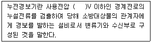
- 20
- 60
- 300
- 600
(정답률: 44%)
78. 소방설비 비상전원의 최소 용량이 20분이 아닌 것은?
- 유도등
- 제연설비
- 비상콘센트설비
- 비상경보설비
(정답률: 48%)
79. 비상콘센트설비 전원의 설치기준 중 다음 ( )안에 알맞은 것은?
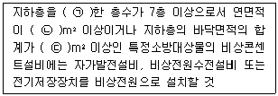
- ㉠ 포함, ㉡ 1000, ㉢ 2000
- ㉠ 포함, ㉡ 2000, ㉢ 3000
- ㉠ 제외, ㉡ 1000, ㉢ 2000
- ㉠ 제외, ㉡ 2000, ㉢ 3000
(정답률: 65%)
80. 비상경보설비를 설치하여야 할 특정소방대상물의 기준 중 옳은 것은? (단, 지하구, 모래ㆍ석재 등 불연재료 창고 및 위험물 저장ㆍ처리 시설 중 가스시설은 제외한다.)
- 연면적 500m2(지하가 중 터널 또는 사람이 거주하지 않거나 벽이 없는 축사 등 동ㆍ식물 관련시설은 제외) 이상인 것
- 30명 이상의 근로자가 작업하는 옥내 작업장
- 지하가 중 터널로서 길이가 1000m 이상인 것
- 지하층 또는 무창층의 바닥면적이 150m2(공연장의 경우 100m2)이상인 것
(정답률: 50%)